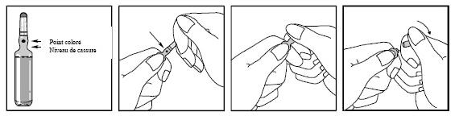
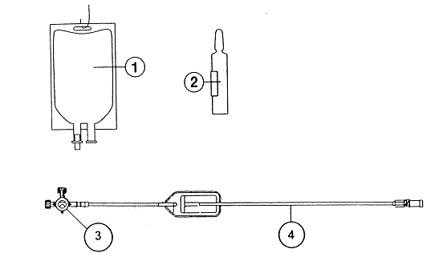

RÉSUMÉ DES CARACTÉRISTIQUES DU PRODUIT
ANSM - Mis à jour le : 18/02/2010
SPORANOX 10 mg/ml, solution à diluer et solvant pour perfusion
2. COMPOSITION QUALITATIVE ET QUANTITATIVE
Itraconazole ....................................................................................................................................... 10 mg
Pour 1 ml de solution à diluer.
· L'ampoule de 25 ml de solution à diluer contient 250 mg d'Itraconazole.
· Après dilution de l'ampoule de 25 ml de solution à diluer dans la poche contenant 50 ml de chlorure de sodium, 60 ml de la solution obtenue contient 200 mg d'Itraconazole.
Pour la liste complète des excipients, voir rubrique 6.1.
Solution à diluer et solvant pour perfusion
4.1. Indications thérapeutiques
Ce médicament est indiqué dans le traitement des mycoses systémiques ou viscérales:
· Aspergillome inopérable symptomatique,
· Aspergillose bronchopulmonaire et pulmonaire nécrosante y compris chez l'immunodéprimé,
· Aspergillose invasive de l'immunodéprimé,
· Chromomycoses,
· Histoplasmoses,
· Paracoccidïomycoses,
· Sporotrichoses et autres mycoses rares à germes sensibles.
4.2. Posologie et mode d'administration
Voie d'administration: perfusion intraveineuse.
Adultes:
SPORANOX 10 mg/ml, solution à diluer et solvant pour perfusion est administré en dose de charge 2 fois par jour pendant les 2 premiers jours de traitement puis à raison d'une perfusion par jour.
· Premier et deuxième jours de traitement: perfusion intraveineuse de 200 mg SPORANOX 10 mg/ml, solution à diluer et solvant pour perfusion en 1 heure, 2 fois par jour.
· A partir du 3ème jour: une perfusion intraveineuse de 200 mg de SPORANOX 10 mg/ml, solution à diluer et solvant pour perfusion en 1 heure, 1 fois par jour. La sécurité d'emploi de SPORANOX 10 mg/ml, solution à diluer et solvant pour perfusion n'est pas documentée pour des périodes de traitement supérieures à 14 jours.
En cas de nécessité, au-delà de 14 jours de traitement par voie IV, le relais sera pris par itraconazole administré par voie orale à la dose de 200 à 400 mg. La posologie de 400 mg est recommandée chez les patients immunodéprimés. La durée du traitement est fonction de l'affection en cause et de la pathologie sous-jacente.
Utilisation chez l'enfant: se reporter à la rubrique 4.4.
Utilisation chez le sujet âgé:se reporter à la rubrique 4.4.
Utilisation chez l'insuffisant rénal:se reporter à la rubrique 4.4.
Utilisation chez l'insuffisant hépatique:se reporter à la rubrique 4.4.
Ce médicament EST CONTRE-INDIQUE en cas de:
· Hypersensibilité connue à l'itraconazole ou à l'un des constituants du produit.
· Contre-indication à l'administration de chlorure de sodium injectable.
· Insuffisance rénale définie comme une clairance à la créatinine inférieure à 30 ml/min, l'hydroxypropyl-β-cyclodextrine, utilisé comme excipient (voir rubrique 6.1), étant éliminée par filtration glomérulaire.
· en association avec la mizolastine, le cisapride, le triazolam, la simvastatine, l'atorvastatine, le pimozide, le bépridil.
· l'allaitement est contre-indiqué si le nourrisson est traité par cisapride (voir rubrique 4.6).
4.4. Mises en garde spéciales et précautions d'emploi
Ce médicament est généralement déconseillé au 1er trimestre de la grossesse, en cas de traitement prolongé.
· Chez la femme en âge de procréer, en cas de nécessité de prescription, il est indispensable de s'assurer qu'elle n'est pas enceinte et de la soumettre préalablement à une méthode efficace de contraception.
· L'allaitement est déconseillé en cas de traitement par ce médicament (Voir rubrique 4.6).
· Chez les patients recevant un traitement immunosuppresseur (par exemple, ciclosporine, tacrolimus, ce médicament peut entraîner des interactions ayant des conséquences cliniques. (Voir rubrique 4.5).
· Utilisation chez l'enfant: les données cliniques disponibles chez l'enfant étant en fait limitées, ce médicament ne sera utilisé chez ces patients que si le bénéfice attendu l'emporte sur le risque potentiel.
· Sujet âgé: les données cliniques étant limitées chez le sujet âgé, ce médicament ne sera utilisé chez ces patients que si le bénéfice attendu l'emporte sur les risques potentiels.
· De très rares cas de toxicité hépatique graves, incluant quelques cas d'insuffisance hépatique aiguë d'évolution fatale ont été rapportés chez des patients traités par SPORANOX. La plupart de ces cas sont survenus chez des patients ayant une maladie hépatique pré-existante, traités pour mycoses systémiques, ayant des pathologies concomitantes et/ou traités par d'autres médicaments hépatotoxiques. Quelques patients ne présentaient pas de facteurs de risque patents de maladie hépatique. Quelques cas ont été observés au cours du 1er mois de traitement, et pour certains au cours de la 1ère semaine de traitement. Il est recommandé de surveiller la fonction hépatique chez les patients traités par SPORANOX.
Les patients doivent être informés qu'ils doivent avertir très rapidement leur médecin en cas d'apparition de signes et de symptômes suggérant une atteinte hépatique en particulier anorexie, nausées, vomissements, asthénie, douleurs abdominales ou urines foncées. En cas de survenue de l'un de ces symptômes, le traitement doit être immédiatement interrompu et des examens de la fonction hépatique doivent être réalisés.
· Chez les patients qui présentent une élévation des enzymes hépatiques ou une maladie hépatique active, ou chez qui d'autres médicaments ont déjà entraîné une toxicité hépatique, le traitement ne sera instauré que si l'avantage escompté l'emporte sur le risque d'atteinte hépatique. Dans ce cas, la surveillance des enzymes hépatiques est nécessaire.
· Une étude réalisée chez le volontaire sain avec SPORANOX 10 mg/ml, solution à diluer et solvant pour perfusion a montré une diminution transitoire asymptomatique de la fraction d'éjection ventriculaire gauche; se résolvant avant la perfusion suivante. La signification clinique de cette observation, pour les formes orales, n'est pas connue.
· L'itraconazole a montré un effet inotrope négatif et SPORANOX a été associé à des cas d'insuffisance cardiaque après administration par voie orale. SPORANOX ne doit être utilisé chez des patients présentant une insuffisance cardiaque congestive ou des antécédents d'insuffisance cardiaque congestive que si le bénéfice est nettement supérieur aux risques. L'évaluation individuelle du rapport bénéfice/risque doit prendre en compte des facteurs tels que la sévérité de l'indication, la posologie et les facteurs de risques individuels d'insuffisance cardiaque congestive. Ces patients doivent être informés des signes et symptômes de l'insuffisance cardiaque congestive, doivent être traités avec précautions et doivent faire l'objet d'un suivi des signes et symptômes de l'insuffisance cardiaque congestive au cours du traitement. Si de tels signes ou symptômes apparaissent au cours du traitement, SPORANOX doit être arrêté.
· Les inhibiteurs calciques peuvent avoir des effets inotropes négatifs qui peuvent s'ajouter à ceux de l'itraconazole; l'itraconazole peut inhiber le métabolisme des inhibiteurs calciques. En conséquence, la prudence s'impose en cas de co-administration d'itraconazole et d'inhibiteurs calciques.
· Insuffisance hépatique: l'itraconazole est principalement métabolisé dans le foie. Chez le cirrhotique, la demie-vie terminale de l'itraconazole est légèrement prolongée. Une diminution de la biodisponibilité orale de l'itraconazole gélule a été observée chez le patient cirrhotique. Un effet similaire peut être attendu avec ce médicament. Une adaptation posologique peut être envisagée.
· Insuffisance rénale: après administration par voie intraveineuse, l'hydroxypropyl-β-cyclodextrine est éliminée par filtration glomérulaire. De ce fait, les patients présentant une insuffisance rénale définie par une clairance à la créatinine inférieure à 30 ml/min ne doivent pas être traités par SPORANOX 10 mg/ml, solution à diluer et solvant pour perfusion.
· Immunodéprimés non VIH+: il n'existe à ce jour que des données préliminaires chez ces patients.
· En cas d'apparition d'une neuropathie qui pourrait être imputée à ce médicament, il convient d'interrompre le traitement.
· On ne dispose pas d'information relative à une hypersensibilité croisée entre l'itraconazole et d'autres antifongiques azolés. La prudence est de rigueur lorsque ce médicament est prescrit à des patients ayant présenté une hypersensibilité à d'autres azolés.
4.5. Interactions avec d'autres médicaments et autres formes d'interactions
Les interactions décrites ci-dessous ont été observées avec la forme gélule.
+ Bépridil
Risque majoré de troubles du rythme ventriculaire, notamment de torsades de pointes.
+ Cisapride
Risque majoré de troubles du rythme ventriculaire, notamment de torsades de pointes.
+ Mizolastine
Risque majoré de troubles du rythme ventriculaire, notamment de torsades de pointes.
+ Pimozide
Risque majoré de troubles du rythme ventriculaire, notamment de torsades de pointes.
+ Simvastatine, atorvastatine (par extrapolation à partir de la simvastatine) (inhibiteurs de l'HMG Co-A réductase)
Risque majoré d'effets indésirables (dose-dépendants) à type de rhabdomyolyse par diminution du métabolisme de l'hypocholestérolémiant.
Interrompre le traitement hypocholestérolémiant pendant la durée du traitement par itraconazole, ou utiliser une autre statine.
+ Triazolam
Augmentation des concentrations plasmatiques de la benzodiazépine par diminution de son métabolisme hépatique, avec majoration importante de la sédation.
+ Buspirone
Augmentation des concentrations plasmatiques de l'anxiolytique par diminution de son métabolisme hépatique, avec majoration importante de la sédation.
+ Ebastine
Risque majoré de troubles du rythme ventriculaire, chez les sujets prédisposés (syndrome du QT long, congénital).
+ Halofantrine
Risque majoré de troubles du rythme ventriculaire, notamment de torsades de pointes.
Si cela est possible, interrompre l'antifongique azolé. Si l'association ne peut être évitée, contrôle préalable du QT et surveillance ECG monitorée.
+ Lercanidipine
Risque majoré d'effets indésirables, notamment d'œdèmes, par diminution du métabolisme hépatique de la dihydropyridine.
+ Lumefantrine et artemether
Risque majoré de troubles du rythme ventriculaire, notamment de torsades de pointes.
Si cela est possible, interrompre le torsadogène associé. Si l'association ne peut être évitée, contrôle préalable du QT et surveillance ECG monitorée.
+ Midazolam
Augmentation des concentrations plasmatiques de la benzodiazépine par diminution de son métabolisme hépatique, avec majoration importante de la sédation.
+ Phénytoïne
Risque d'inefficacité de l'itraconazole et de son métabolite, par augmentation de son métabolisme hépatique.
+ Quinidine
Risque majoré de troubles du rythme ventriculaire, notamment de torsades de pointes, ainsi que d'acouphènes et/ou de diminution de l'acuité auditive (cinchonisme), par diminution du métabolisme hépatique de la quinidine par l'itraconazole.
Si l'association ne peut être évitée, surveillance clinique étroite et ECG.
+ Tacrolimus
Risque d'augmentation des concentrations plasmatiques de l'immunosuppresseur (inhibition de son métabolisme) et de la créatininémie.
Contrôle strict de la fonction rénale, dosage des concentrations plasmatiques de l'immunosuppresseur et adaptation éventuelle de sa posologie pendant l'association ou après son arrêt.
+ Toltérodine
Augmentation des concentrations de toltérodine chez les métaboliseurs lents, avec risque de surdosage.
+ Vinca - alcaloïdes cytotoxiques
Majoration de la neurotoxicité de l'antimitotique, par diminution de son métabolisme hépatique par l'itraconazole.
Associations faisant l'objet de précautions d’emploi
+ Anticoagulants oraux
Augmentation de l'effet de l'anticoagulant oral et du risque hémorragique par diminution de son métabolisme hépatique.
Contrôle plus fréquent du taux de prothrombine et surveillance de l'INR; adaptation de la posologie de l'anticoagulant oral pendant le traitement par l'itraconazole et après son arrêt.
+ Anticonvulsivants inducteurs enzymatiques: Carbamazépine, phénobarbital, primidone
Diminution des concentrations plasmatiques et de l'efficacité de l'itraconazole.
Surveillance clinique. Si besoin, dosage de l'itraconazole plasmatique et adaptation éventuelle de sa posologie.
+ Budésonide
Augmentation des concentrations plasmatique du budénoside par diminution de son métabolisme hépatique par l'inhibiteur enzymatique, avec risque d'apparition d'un syndrome cushingoïde.
+ Buprenorphine
Augmentation des concentrations de buprénorphine par diminution de son métabolisme hépatique, avec risque de majoration de ses effets indésirables.
Surveillance clinique et adaptation de la posologie de la buprénorphine pendant le traitement par l'inhibiteur et, le cas échéant, après son arrêt.
+ Ciclosporine
Risque d'augmentation des concentrations sanguines de l'immunosuppresseur (inhibition de son métabolisme) et de la créatininémie.
Dosage des concentrations sanguines de l'immunosuppresseur, contrôle de la fonction rénale et adaptation de sa posologie pendant l'association et après son arrêt.
+ Digoxine
Augmentation de la digoxinémie avec nausées, vomissements, troubles du rythme. Diminution de l'élimination.
Surveillance clinique et, s'il y a lieu de l'ECG et de la digoxinémie avec adaptation de la posologie de la digoxine pendant le traitement par l'itraconazole et après son arrêt.
+ Dihydropyridines (par extrapolation à partir de la nifédipine, la félodipine et l'isradipine)
Risque majoré d'effets indésirables, notamment d'œdèmes, par diminution du métabolisme hépatique de la dihydropyridine.
Surveillance clinique et adaptation éventuelle de la posologie de la dihydropyridine pendant le traitement par l'itraconazole et après son arrêt.
+ Fluticasone
Augmentation des concentrations plasmatique du fluticasone par diminution de son métabolisme hépatique par l'inhibiteur enzymatique, avec risque d'apparition d'un syndrome cushingoïde.
+ Hydroquinidine
Risque d'accouphènes et/ou de diminution de l'acuité auditive: cinchonisme lié à une diminution du métabolisme hépatique de l'antiarythmique par l'itraconazole.
Surveillance des concentrations plasmatiques de l'antiarythmique et diminution éventuelle de sa posologie.
+ Rifampicine
Diminution des concentrations plasmatiques et de l'efficacité des deux anti-infectieux (induction enzymatique par la rifampicine et diminution de l'absorption intestinale par l'azolé antifongique).
Espacer les prises des deux anti-infectieux, surveiller la concentration plasmatique de l'azolé antifongique et adapter éventuellement la posologie.
+ Sildénafil
Augmentation des concentrations plasmatiques de sildénafil, avec risque d'hypotension. Débuter le traitement par sildénafil à la dose de 25 mg par jour.
L'utilisation en traitement prolongé, notamment au 1er trimestre de la grossesse, sera réservée aux cas mettant en jeu le pronostic vital. Dans les autres cas il est préférable, par mesure de précaution, de ne pas utiliser l'itraconazole au cours de la grossesse.
En effet, bien que les données cliniques en nombre limité soient rassurantes, elles concernent majoritairement des traitements de courte durée et les données animales ont mis en évidence un effet tératogène (Voir rubrique 5.3).
En raison du passage dans le lait, de l'itraconazole et compte-tenu de son profil d'effets secondaires, l'allaitement est déconseillé en cas de traitement par ce médicament.
Si l'enfant d'une mère qui doit prendre de l'itraconazole est déjà traité par cisapride, l'allaitement doit être suspendu pendant toute la durée du traitement maternel en raison d'un risque potentiel d'interaction chez l'enfant (torsade de pointes) (voir rubrique 4.3).
4.7. Effets sur l'aptitude à conduire des véhicules et à utiliser des machines
Aucun effet n'a été observé.
Les effets indésirables les plus fréquemment rapportés sont de nature gastro-intestinale, en particulier dyspepsie, nausées, vomissements, diarrhée, douleurs abdominales et constipation.
D'autres effets indésirables ont été rapportés en particulier céphalées, augmentations réversibles des enzymes hépatiques, hépatites, troubles menstruels, sensations de vertige et réactions allergiques (telles que prurit, rash, urticaire et œdème de Quincke), neuropathie périphérique, syndrome de Stevens-Johnson, alopécie, hypokaliémie, œdèmes par insuffisance cardiaque congestive et œdème pulmonaire.
De très rares cas de toxicité hépatique graves, incluant quelques cas d'insuffisance hépatique aiguë d'évolution fatale ont été rapportés chez des patients traités par SPORANOX.
En cas de surdosage accidentel, un traitement symptomatique doit être institué. L'itraconazole n'est pas hémodialysable. Il n'existe aucun antidote spécifique.
5. PROPRIETES PHARMACOLOGIQUES
5.1. Propriétés pharmacodynamiques
Classe pharmacothérapeutique: ANTIMYCOSIQUE A USAGE SYSTEMIQUE
(J: antiinfectieux généraux à usage systémique)
L'itraconazole est un antifongique à large spectre de la classe des triazolés, actif sur:
· les dermatophytes (Trichophyton sp., Microsporum sp., Epidermophyton floccosum),
· les levures (Cryptococcus neoformans, Candida sp., en particulier C. albicans, C. glabrata, C.krusei, Pityrosporum sp.);
· les contaminants: Aspergillus sp et Dematiées.
Fusarium, Acremonium et Mucorales sont habituellement peu sensibles ou résistants;
· les champignons dimorphiques: Histoplasma sp., Paracoccidioides brasiliensis, Sporothrix schenckii, Fonsecaea sp., Cladosporium sp., Blastomyces dermatitidis, ainsi que sur d'autres levures et champignons filamenteux moins souvent rencontrés.
Le pouvoir fongicide de l'itraconazole est dû à son action spécifique sur le cytochrome P450 des champignons (aux concentrations thérapeutiques, cette spécificité d'action sur le cytochrome P450 fongique par rapport au cytochrome P450 des cellules a été mise en évidence par des études in vitro).
L'inhibition du cytochrome P450 bloque le système enzymatique qui permet la transformation du lanostérol en ergostérol, constituant lipidique essentiel de la membrane fongique. L'accumulation de lanostérol est également toxique pour la cellule fongique.
Chez les levures, ce mode d'action de l'itraconazole est complété par une perturbation de l'activation de la chitine synthétase, enzyme intervenant dans la synthèse de la paroi fongique.
5.2. Propriétés pharmacocinétiques
Après administration intraveineuse d'une dose unique de 200 mg d'itraconazole, la clairance plasmatique moyenne est de 312 ml/min, le volume de distribution moyen Vdss est de 561 l et la demi-vie d'élimination moyenne est de 33 h.
La cinétique de l'itraconazole n'est pas linéaire. Dans la gamme de doses comprises entre 50 et 200 mg, la clairance plasmatique de l'itraconazole décroît de 20 à 25 % à chaque doublement de dose.
L'itraconazole est métabolisé de façon extensive dans le foie en de nombreux métabolites. Le principal enzyme impliqué dans le métabolisme de l'itraconazole est le CYP3A4. L'hydroxy-itraconazole, un des métabolites de l'itraconazole, possède in vitro une activité antifongique comparable à celle de l'itraconazole. L'élimination fécale de l'itraconazole inchangé représente 3 à 18 % de la dose administrée. L'excrétion rénale de l'itraconazole et de l'hydroxy-itraconazole représente moins de 1 % de la dose administrée.
Après administration selon le schéma posologique recommandé pour SPORANOX 10 mg/ml, solution à diluer et solvant pour perfusion, 200 mg d'itraconazole 2 fois par jour pendant les 2 premiers jours de traitement puis 200 mg 1 fois par jour à partir du 3ème jour, l'état d'équilibre plasmatique de l'itraconazole et de l'hydroxy-itraconazole est atteint respectivement après 2 et 4 jours. Les concentrations en hydroxy-itraconazole à la vallée sont environ 2 fois plus élevées que celle de l'itraconazole inchangé.
La liaison aux protéines plasmatiques est de 99,8 %. L'itraconazole est très largement distribué dans les tissus qui peuvent faire l'objet d'une atteinte fongique. Les concentrations dans les poumons, les reins, le foie, les os, l'estomac, la rate et les muscles sont environ 2 à 3 fois plus élevées que les concentrations plasmatiques correspondantes.
5.3. Données de sécurité préclinique
Hydroxypropyl-β-cyclodextrine (HP-β-CD)
Chez la souris, le rat et le chien, les études de toxicité aiguë et de toxicité par administration réitérée montrent une importante marge de sécurité de l'HP-β-CD administrée par voies orale et intraveineuse. La majorité des effets observés sont de caractère adaptatif (modifications histologiques du tractus urinaire, ramollissement des féces dû à une rétention osmotique aqueuse au niveau du gros intestin, activation du système phagocytaire mononucléaire) et montrent une réversibilité satisfaisante.
De légères modifications hépatiques ont été observées à des doses correspondant à 30 fois la dose d'HP-β-CD proposée en clinique. L'HP-β-CD n'a pas d'effets sur la fertilité, ni d'effets embryotoxiques ou tératogènes directs et est dépourvue d'effets mutagènes.
Dans l'étude de carcinogénèse chez le rat, une augmentation de l'incidence des néoplasmes du gros intestin (à 5000 mg/kg/jour) et du pancréas exocrine (à 500 mg/kg/jour) a été observée.
Chez le rat, le développement de tumeurs du pancréas est dû à l'effet mitogène de la cholécystokine. Ce phénomène n'a pas été observé dans l'étude de cancérogénèse réalisée chez la souris, ni dans l'étude de toxicité à 12 mois chez le chien ou dans l'étude de 2 ans chez le singe cynomolgus femelle. La cholécystokine ne semble pas avoir d'effet mitogène chez l'homme. Lorsque l'on tient compte des surfaces corporelles, l'exposition à l'HP-β-CD chez l'homme à la posologie initiale recommandée en clinique pour ce médicament correspond à environ 1,7 fois l'exposition observée à la dose la plus basse dans l'étude réalisée chez le rat.
Bien qu'hypothétique, la survenue d'une telle pathologie chez l'homme ne peut être totalement éliminée. En conséquence, une surveillance de l'amylasémie chez les sujets traités à long terme (pendant plusieurs mois) paraît nécessaire.
Itraconazole
Les études de segment II ont été réalisées chez le rat, la souris, le lapin.
Chez le rat, par gavage (10, 40, 160 mg / kg / jour de J6 à J16), embryotoxicité et tératogénicité dès 40 mg (encéphalocèles, acranie, ethmocéphalie, anomalies squelettiques). Maternotoxicité dès 40 mg / kg / jour.
Chez la souris, par gavage (10, 40, 160 mg / kg / jour de J6 à J16) embryotoxicité et tératogénicité à 160 mg / kg. Maternotoxicité à la plus forte dose.
Chez le lapin par gavage (5, 20, 80 mg / kg / jour de J6 à J18) pas d'effet embryotoxique ni tératogène.
Hydroxypropyl-béta-cyclodextrine, propylène glycol, acide chlorhydrique concentré, hydroxyde de sodium, eau pour préparations injectables.
Solvant:
Chlorure de sodium, eau pour préparations injectables.
Ce médicament ne doit pas être mélangé avec d'autres médicaments à l'exception de ceux mentionnés dans la rubrique 6.6.
Après dilution dans la poche contenant 50 ml de chlorure de sodium, la stabilité physico chimique du produit reconstitué à été démontré pendant 8 heures entre +2 et +8°C, à l'abri de la lumière.
Toutefois du point de vue microbiologique, le produit doit être utilisé immédiatement.
En cas d'utilisation non immédiate, les durées et conditions de conservation après dilution et avant utilisation relèvent de la seule responsabilité de l'utilisateur et ne devraient pas dépasser 8 heures entre 2 et 8°C, à l'abri de la lumière.
6.4. Précautions particulières de conservation
A conserver à une température ne dépassant pas +25°C.
A conserver dans l'emballage extérieur d'origine, à l'abri de la lumière.
6.5. Nature et contenu de l'emballage extérieur
Solution à diluer:
· Ampoule siliconée de 25 ml en verre incolore de type I.
Solvant:
· Poche souple de 100 ml, en PVC, équipée d'un port d'entrée et d'un port de sortie flexibles.
· Ligne d'extension (PVC).
6.6. Précautions particulières d’élimination et de manipulation
Ce médicament ne doit être dilué qu'avec la solution injectable de chlorure de sodium à 0,9 % fournie avec le produit.
|
L'itraconazole peut précipiter lorsque les 25 ml de SPORANOX 10 mg/ml, solution à diluer pour perfusion sont dilués dans une autre solution que 50 ml de solution injectable de chlorure de sodium à 0,9 %. La totalité des 25 ml de SPORANOX 10 mg/ml, solution à diluer pour perfusion contenus dans l'ampoule doivent être dilués dans la poche de perfusion de chlorure de sodium destinée à être utilisée uniquement avec SPORANOX 10 mg/ml, solution à diluer pour perfusion. Aucune autre poche ne doit être utilisée. Utiliser la ligne d'extension fournie avec le produit. SPORANOX 10 mg/ml, solution à diluer pour perfusion ne doit pas être administré de façon concomitante avec d'autres médicaments ou solutions. |
SPORANOX 10 mg/ml, solution à diluer pour perfusion doit être administré comme indiqué ci-dessous:
Ouverture de l'ampoule:
Casser l'ampoule comme indiqué:

Procédure de rinçage:
Tout d'abord, rincer la tubulure pour perfusion avec 5 à 10 ml de solution de chlorure de sodium à 0,9 % pour perfusion par le robinet à 2 voies.
Reconstitution du produit:
· Chaque composant doit être à température ambiante.
· Procéder à la reconstitution uniquement dans la poche pour perfusion fournie. Introduire en une seule fois la totalité du volume (25 ml) de SPORANOX 10 mg/ml, solution à diluer pour perfusion dans la poche.
· Après transfert de la totalité de l'ampoule de SPORANOX 10 mg/ml, solution à diluer pour perfusion, agiter doucement la poche.
· Pour la conservation de la solution après reconstitution voir rubrique 6.3.
Perfusion:
· La poche de perfusion contient alors 25 ml de SPORANOX 10 mg/ml, solution à diluer pour perfusion et 50 ml de chlorure de sodium pour injections;
· Connecter une tubulure de perfusion au robinet à 2 voies de la ligne d'extension;
· Ajuster la vitesse de perfusion à 1 ml/min (environ 25 gouttes/min);
· Administrer 60 ml de solution au patient en 1 heure environ;
· Arrêter la perfusion lorsque 60 ml ont été administrés;
· Noter que 200 mg d'itraconazole ont été administrés.
Procédure de rinçage:
Lorsque la perfusion est terminée, une procédure de rinçage complète doit être mise en place pour nettoyer la voie IV du cathéter et éviter les risques d'incompatibilités entre des quantités résiduelles d'itraconazole et d'autres médicaments qui pourraient ensuite être administrés via le même cathéter.
Le rinçage sera réalisé en continu pendant une durée comprise entre 30 secondes et 15 minutes.
· Rincer la ligne d'extension au niveau du robinet à 2 entrées, juste au-dessus du filtre en ligne à 0,2 µm avec 15 à 20 ml de solution injectable à 0,9 % de chlorure de sodium.
· Retirer la tubulure de perfusion et la ligne d'extension. Jeter le dispositif de perfusion après utilisation. Ne pas re-stériliser ou ré-utiliser.
|
Afin d'éviter les risques de précipitation, ne pas introduire d'autres médicaments dans la poche de perfusion ou la tubulure contenant SPORANOX 10 mg/ml, solution à diluer pour perfusion. Les autres médicaments ne doivent être administrés qu'après rinçage des voies des cathéters ou en utilisant une autre entrée en cas de cathéter à plusieurs entrées. |

1. Poche de soluté de chlorure de sodium à 0,9% pour perfusion
2. Ampoule de SPORANOX 10 mg/ml, solution à diluer pour perfusion
3. Robinet à 2 voies
4. Ligne d'extension
7. TITULAIRE DE L’AUTORISATION DE MISE SUR LE MARCHE
JANSSEN-CILAG
1, rue Camille Desmoulins
TSA 91003
92787 ISSY LES MOULINEAUX Cedex 9
8. NUMERO(S) D’AUTORISATION DE MISE SUR LE MARCHE
· 565 719-9: 25 ml de solution à diluer en ampoule (verre) avec 50 ml de solvant en poche (PVC).
9. DATE DE PREMIERE AUTORISATION/DE RENOUVELLEMENT DE L’AUTORISATION
[à compléter par le titulaire]
10. DATE DE MISE A JOUR DU TEXTE
[à compléter par le titulaire]
Sans objet.
12. INSTRUCTIONS POUR LA PREPARATION DES RADIOPHARMACEUTIQUES
Sans objet.
Liste I.
Médicament soumis à prescription hospitalière.